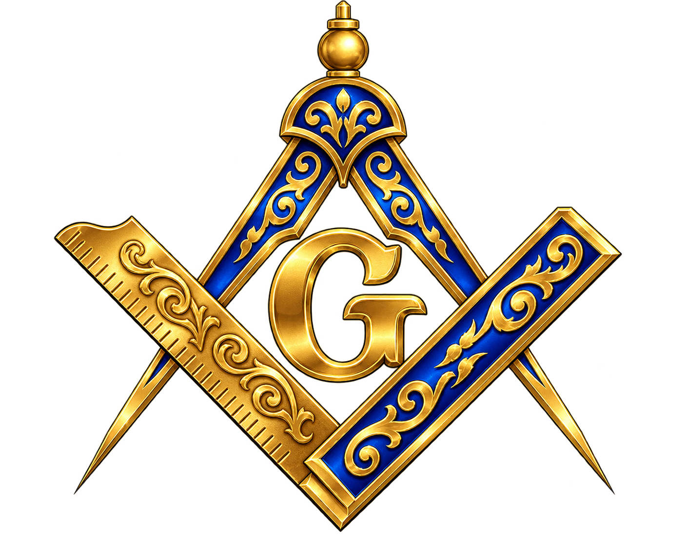

Réseau d'influence
Un accès direct à des membres qui comptent déjà dans leur domaine — pas un simple carnet d'adresses, un vrai levier.

FRANC MAÇONNERIE existe pour une raison précise : le perfectionnement de l'être humain par la raison et la science, au service d'une société libérée de l'oppression politique et religieuse. Ce n'est pas un slogan — c'est le filtre qui décide qui entre, et qui n'entre pas.
Un accès direct à des membres qui comptent déjà dans leur domaine — pas un simple carnet d'adresses, un vrai levier.
Textes censurés, débats retirés d'autres cercles, discussions qu'on ne tient pas ailleurs.
Des opportunités qui circulent d'abord en interne, avant d'exister publiquement.
Formats de transmission fermés, pensés pour aller plus loin que ce qu'on trouve en accès libre.